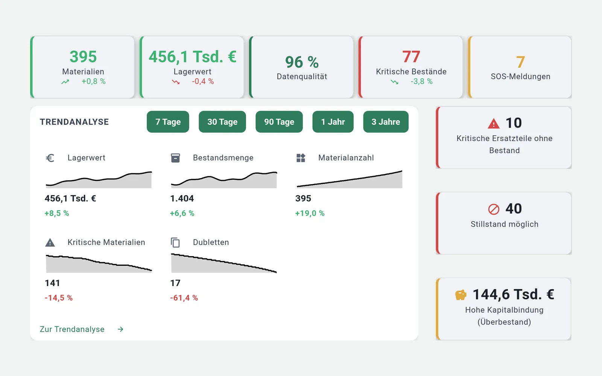

Ersatzteilmanagement · Salzgitter, DE
Ersatzteilmanagement für produzierende Unternehmen
Mehr Versorgungssicherheit. Weniger Kapitalbindung.
Wir machen sichtbar, welche Ersatzteile kritisch sind und wo Bestände unnötig Kapital binden – und setzen daraus konkrete Maßnahmen um: mit Beratung vor Ort und eigener Software.
Individuell entwickelt · Umsetzung in Tagen, nicht Monaten
Warum Ersatzteillager unnötig Geld kosten – und trotzdem Produktionsrisiken verursachen
Hohe Bestände bedeuten nicht automatisch hohe Versorgungssicherheit. Erst Transparenz über Kritikalität, Bedarfe und Materialstammdaten macht ein Ersatzteillager wirtschaftlich und zuverlässig.
Fehlteile
Steht die Anlage, weil ein Ersatzteil fehlt, zählt jede Stunde. Genau das passiert, wenn Bestände nicht gepflegt sind – und am Ende kostet die Express-Beschaffung mehr als das Teil selbst.
Überbestände
Manches Ersatzteil liegt seit Jahren im Regal, ohne dass es je gebraucht wurde. Das bindet Kapital, das anderswo im Unternehmen fehlt.
Fehlende Transparenz
Wenn dasselbe Teil unter drei verschiedenen Nummern im System steht, verlässt sich am Ende niemand mehr auf die Daten. Beschaffung und Planung laufen dann auf Bauchgefühl statt auf Fakten.
Fehlende Standards
Jeder im Team macht seine Arbeit gut – nur eben auf seine eigene Art. Ohne gemeinsame Regeln für Stammdaten wächst der Pflegeaufwand über die Zeit still vor sich hin.
Aus der Instandhaltung, nicht aus der Unternehmensberatung
Jahrelange Erfahrung in operativer Instandhaltung, Disposition und Lagerlogistik – kombiniert mit eigener Software, die wir in Deutschland entwickeln und betreiben.

- Eigene SoftwareAnalyse und Werkzeug aus einer Logik – keine Fremdlizenzen
- Individuell angepasstAn Ihre Systeme statt Lösung von der Stange
- FestpreisKlarer Liefergegenstand statt offener Tagessätze
- DSGVO-konformServer in Deutschland oder lokal bei Ihnen
- Feste AnsprechpersonSitz in Salzgitter, auf Wunsch vor Ort – ohne Subunternehmer
So läuft die Zusammenarbeit ab
Erstgespräch, Quick-Check, Entscheidung und anschließend Umsetzung oder eigenständige Weiterarbeit – transparent und ohne Folgeverpflichtung.
-
Erstgespräch
Kostenlos und unverbindlich. Wir klären, ob Ihr Fall zu uns passt.
-
Quick-Check
Ein bis zwei Tage Analyse von Daten und Lager mit priorisiertem Maßnahmenplan.
-
Entscheidung
Sie setzen den Plan selbst um oder beauftragen uns. Beides ist ausdrücklich in Ordnung.
-
Umsetzung und Absicherung
Bestandslogik, Stammdaten, Dashboards oder WK SmartParts – je nach Priorität.
Wie viel Kapital könnte in Ihrem Lager frei werden?
Ein grobes Rechenbeispiel mit Ihren eigenen Schätzwerten – kein Angebot und keine Zusage. Belastbare Zahlen liefert der Quick-Check.
- Kapital, das frei werden könnte
- 160.000 €
- Lagerkosten, die jährlich entfallen könnten
- 32.000 €
Rechnung: Lagerwert × Anteil ohne Bewegung × abbaubarer Anteil; Kosten mit dem gewählten Kostensatz.
Quick-Check anfragenSie wissen nicht, wie viel Kapital in Ihrem Lager unnötig gebunden ist?
Genau das beantwortet der Ersatzteil-Quick-Check. Festpreis, Ergebnis in ein bis zwei Tagen, konkreter Maßnahmenplan – den Sie auch ohne uns umsetzen können.